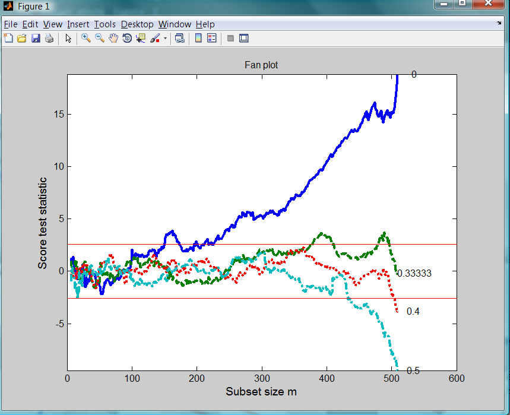

| Flexible Statistics Data Analysis Toolbox™ |
|
Score test statistic (see function Score) for several values of the transformation parameter λ in each step of the forward search.
[out] = FSRfan(y,X)
[out] = FSRfan(y,X,param1,val1,param2,val2,...)
[out] = FSRfan(y,X) produces all the necessary elements to compute the ‘‘fan plot" which is nothing but the simultaneous forward plot of the score test statistic (see function Score) for several values of the transformation parameter λ. Each search is separate, so that the observations may, and do, enter in different orders in the searches. This plot enables us to appraise in a quantitative way the percentage of observations in agreement with the different values of the transformation parameter If the size of the data set is small (i.e. smaller than 100) generally it is enough to consider the five most common value of λ : −1,−0.5, 0, 0.5 and 1 otherwise a finer grid of values of λ may be needed.
Function FSRfan performs a separate search for each value of λ which is tested. The data are transformed and a starting point is found for each forward search, which then proceeds independently for each values of λ using the transformed data.
y is a vector of length n containing the response values, while X is the n-by-p-1 matrix which contains (in the columns) the values of p-1 predictive terms
[out] = FSRfan(y,X) returns the following information
Score − (n-init) x length(la)+1 matrix containing the values
of the score test for each value of the transformation parameter
1st
col = fwd search index
2nd col = value of the score test in each step
of the fwd search for la(1)
...........
end col = value of the score
test in each step of the fwd search for la(end)
la − vector containing the values of lambda for which fan plot is constructed
bs − p x length(la) matrix containing the units forming the initial subset for each value of lambda
Un − cell of size length(la). out.Un{i} is a (n-init)
x 11 matrix which contains the unit(s) included in the subset at each step
in the search associated with la(i). REMARK: in every step the
new subset is compared with the old subset. Un contains the unit(s) present
in the new subset but not in the old one Un(1,2:end) for example
contains the unit included in step init+1
...
Un(end,2:end)
contains the units included in the final step of the search
y − A vector with n elements that contains the response variable which has been used
X − Data matrix of explanatory variables which has been used (it also contains the column of ones if input option intercept was missing or equal to 1)
[out] = FSRfan(y,X,param1,val1,param2,val2,...) specifies one or more of the name/value pairs described in the following table.
| Parameter | Value |
|---|---|
| 'intercept' |
If 1, a model with constant term will be fitted (default) else no constant term will be included. |
| 'nocheck' |
Scalar. If nocheck is equal to 1 no check is performed on matrix y and matrix X. Notice that y and X are left unchanged. In other words the additional column of ones for the intercept is not added. As default nocheck=0. |
| 'la' |
Vector which specifies for which values of the transformation parameter λ it is necessary to compute the score test. Default value of la is la=[-1 -0.5 0 0.5 1]; that is the five most common values of λ |
| 'h' |
The number of observations that have determined the least trimmed squares estimator. h generally is an integer greater or equal than [(n+size(X,2)+1)/2] but smaller then n |
| 'nsamp' |
Number of subsamples which will be extracted to find the robust estimator. If nsamp=0 all subsets will be extracted. They will be (n choose p). Remark: if the number of all possible subset is smaller than 1000 the default is to extract all subsets otherwise just 1000. |
| 'lms' |
Scalar. If lms=1 (default) Least Median of Squares is computed, else Least trimmed squares is computed. |
| 'plots' |
Scalar. If plots=1 the fan plot is produced else (default) no plot is produced |
| 'init' |
Scalar which specifies the initial subset size to start monitoring exceedances,
if init is not specified it will be set equal to
|
| 'conflev' |
confidence level for the bands (default is 0.99 that is we plot two horizontal lines in correspondence of value -2.58 and 2.58. |
| 'titl' |
a label for the title (default: 'Fan plot') |
| 'labx' |
a label for the x-axis (default: 'Subset size m'). |
| 'laby' |
a label for the y-axis (default: 'Score test statistic'). |
| 'xlimx' |
vector with two elements controlling minimum and maximum of the x axis. Default value is [init n]. |
| 'ylimy' |
vector with two elements controlling minimum and maximum of the y axis. Default value for ylimy(1)=max(min(score_test),-20). Default value for ylimy(2)=min(max(score_test),20). |
| 'lwd' |
Scalar which controls line width of the curves which contain the score test. Default line width=2. |
| 'lwdenv' |
Scalar which controls the line with of the horizontal lines associated with the envelopes. Default is lwdenv=1. |
| 'FontSize' |
Scalar which controls the font size of the labels of the axes. Default value is 12. |
| 'SizeAxesNum' |
Scalar which controls the size of the numbers of the axes. Default value is 10. |
| 'msg' |
Scalar which controls whether to display or not messages on the screen If msg=1 (default) messages are displyed on the screen about estimated time to compute LMS (LTS) for each value of λ. |
| 'intercept' |
Scalar. If 1, a model with constant term will be fitted (default), if 0, no constant term will be included. |
| 'tag' |
String which identifies the handle of the plot which is about to be created. The default is to use tag pl_fan. Notice that if the program finds a plot which has a tag equal to the one specified by the user, then the output of the new plot overwrites the existing one in the same window else a new window is created. |
Robust analysis of transformations for the wool dataset:
% Load wool data: 27 observations and 3 explanatory variables
XX=load('wool.txt');
y=XX(:,end);
X=XX(:,1:end-1);
% Function FSRfan stores the score test statistic.
% In this case we use the five most common values of lambda are considered
[out]=FSRfan(y,X);
% Produce a fan plot and display it on the screen
fanplot(out);
The fan plot shows the log transformation is diffused throughout the data and does not depend on the presence of particular observations.

Robust analysis of transformations for the loyalty cards dataset:
XX=load('loyalty.txt');
y=XX(:,end);
X=XX(:,1:end-1);
% la = vector contanining the most common values of the transformation
% parameter
la=[0 1/3 0.4 0.5];
% Store the score test statistics for the specified values of lambda
% and automatically produce the fan plot
[out]=FSRfan(y,X,'la',la,'init',size(X,2)+2,'plots',1,'lwd',3);
The fan plot shows the even if the third root is the best value of the transformation parameter at the end of the search in earlier steps it lies very close to the upper rejection region. The best value of the transformation parameter seems to be the one associated with l=0.4 which is always the confidence bands but at the end of search, due to the presence of particular observations it goes below the lower rejection line.

|
|
fsrenvmdr.html | fsrh.html |
|